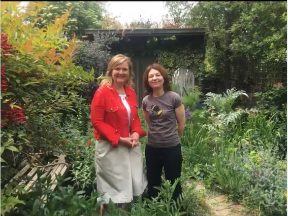

| helping bees in the city | |
|
Welcome to Urban Bees
 This is the audio from the BBC Radio 4's Today programme of Saturday 8th June 2019 at 8.20am. Martha Kearney came to our garden to interview Alison about solitary bees.
The Tweet that accommpanied the piece is below.
|
|